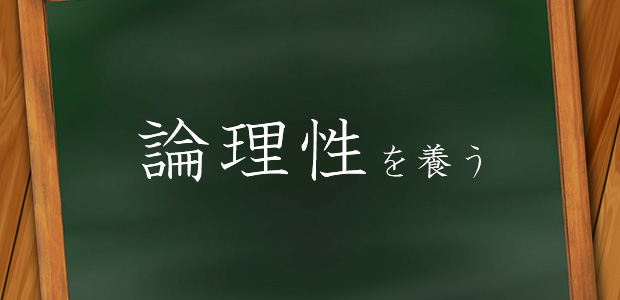

最近とみに、思春期の子供を持つ親御さんに講演をすることが増えていますが、そのなかでいつも口癖のように話すアドバイスが、「子供を大人扱いする」こと。育児本や教育書によく書かれているので、みなさんも一度は目にしたことがあるはずのこのフレーズですが、実は結構奥が深いなと、最近思うのです。
そんなわけで、今日はこの「子供を大人扱いする」について、少し掘り下げてみたいと思います。
大人扱いの目的は？
そもそも、子供を大人扱いする目的はなんでしょう？ こう問われたときに、なんとなくの漠然としたイメージは思い浮かぶかもしれませんが、それを言語化するのはなかなか難しいものです。例えば、「自分の行動への責任感を養う」「自立」などという答えになるかもしれません。これらの答えはどれも正しいと思いますが、勉強面に関して言えば、更に重要なのは「論理性を身につける」という目的でしょう。
小学校から大学まで、ひたすら論理性を問われる
大学入試国語を教えていて痛感するのは、国語という教科で問われる力は、実は「感性」ではなく「理性」であるということ。大学入試国語では、自分の解答には全て、問題文のなかから抽出した根拠が求められます。そして、その根拠にはいくつもの候補があり、その中で最も妥当と思われる根拠を選ばなければなりません。さらに、その選択にもまた根拠が求められます。いくつもの根拠を正確に、妥当に、論理的に選択しなければ解けないように問題が作られているのです。このような問題を解くためには、いつも「原因と結果」の関係を意識している必要があります。
例えば、手に持っていたペンを床に落としたとき、ペンが落ちた原因はなんでしょうか？ 握りしめた手を離したから？ それとも地球の重力？ それとも「手を離そう」とした意思？ 一見分かりやすい出来事も、その理由を細かく突き詰めていくと様々な原因が浮かび上がってきます。そして、重要なのは、どれが原因なのかを決定することではなく、「多くの原因が考え得る」と気付くことなのです。
このような気付きは、付け焼き刃で生まれるものではありません。普段から「原因・結果」の関係を意識する姿勢がなければ、試験の強烈なプレッシャーのなかで実行することは不可能です。
現在の日本の入試システムは、明らかにトップダウン式です。大学入試のモデルが高校・中学と降りてきて、問題の傾向はそのモデルに適合するものになります。そんなわけで、高校入試の問題も中学入試の問題も、つきつめれば「原因・結果」の関係を問うものになっているのです。
論理性を養う？
では、このような「原因・結果」の関係を意識し、妥当な推論を行う能力はどのようにして養えばよいのでしょうか。この問いに答えるためには、そもそもこの能力がなぜ必要なのかを考えてみる必要があります。
この能力が必要になるシーンは、他者との意思疎通が難しい状況であるといえるでしょう。「阿吽の呼吸」でお互いの考えていることを察し合える仲であれば、この能力はあまり必要ではありません。それまで長くつきあった経験から答えを導き出してしまえばよいのですから。
そう考えてみると、家庭、親子というのは、論理性を養うのに「最も向かない」場所であることに気付きます。親子の間柄は人間関係の中で最も濃密で近しいもの。特にお母さんと子供は、子供が生まれたまさにその瞬間からつきあいが始まります。しかし、こんなある意味「最悪」の場所でも、論理性を養っていかなければなりません。なぜなら、子供にとって家庭は日常生活の大半を占める「中心の場所」だからです。
つまり、「大人として扱う」とは、家庭で論理性を養うために作り出された「擬似的な距離感」であるといえるのです。この距離感を維持しつづけるのは並大抵のことではありません。少し気を抜くとすぐに元通りになってしまいます。困難ではありますが、この絶妙の距離感を作り出すことに成功した場合、そのリターンは非常に大きいものになりますね。